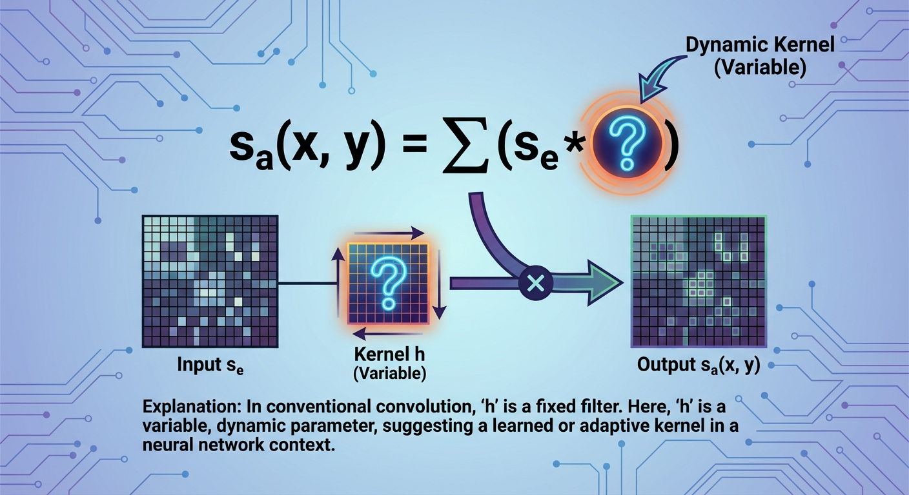

Congratulations! You've just spent four lessons mastering the art of the 'Kernel.' You now know how to smooth an image with a Gaussian Blur and how to hunt for edges using the Sobel operator. We acted like master chefs, carefully choosing the exact ingredients (numbers) to put into our matrices to get the flavor we wanted.
But here is the million-dollar question: What if we didn't have to guess the numbers? What if we didn't have to mathematically derive that a Sobel filter needs a $-2$ in the center?
In the modern era of Artificial Intelligence, specifically in Convolutional Neural Networks (CNNs), we stop writing the numbers ourselves. We let the computer write them.
The massive revolution in Computer Vision didn't come from inventing a new way to process images. It is still based on the exact same Convolution operation you mastered in Lesson 1.
The difference is in the \(h(u, v)\) term. In a CNN, the values inside the kernel are initialized as random garbage (noise). As the network trains on thousands of images, it slowly tweaks these numbers. It tries to find the best possible filter to recognize the objects in the pictures.
In a neural network, the values inside the filters (kernels) are not fixed. They are variables that the network updates during training to minimize errors. These are often referred to as weights.
So, instead of a human saying, 'I think we need an edge detector here,' the AI looks at the data and says, 'To solve this problem, I really need to detect edges,' and it learns to become an edge detector.
You might be wondering: If the AI learns its own filters, does it learn something completely alien to us? Does it invent math we've never seen?
The fascinating answer is: No.
When researchers visualize the filters learned by famous AI models (like AlexNet or ResNet) in their very first layer, they see something incredible. The AI usually reinvents the wheel.
This validates everything you just learned. The concepts of Edge Detection and Smoothing aren't just old-school tricks. They are the fundamental 'alphabet' of vision. Even the most advanced AIs start by learning this alphabet.
This is why understanding Chapter 9 is so critical. If you look inside a 'Black Box' AI, you will see the ghosts of the filters you studied here.
Understanding classical filters allows you to debug modern networks. If an AI fails to recognize a texture, you might realize its initial layers failed to learn the correct frequency filters (like Gabor filters), giving you a clue on how to fix it.
Before we wrap up this module, let's address a common question about the relationship between the past and the present.
Let's take a moment to recap the journey we've taken through the world of Simple Filters.
You have now completed the module on Simple Filters (Kernels).
We started with simple math—multiplying and adding numbers in a small grid—and ended up at the doorstep of the most advanced Artificial Intelligence systems in the world.
In this lesson, you connected the dots between manual engineering and automated learning:
In the next module, we will dive deeper into Feature Extraction and see how we can describe images not just by their edges, but by their content.